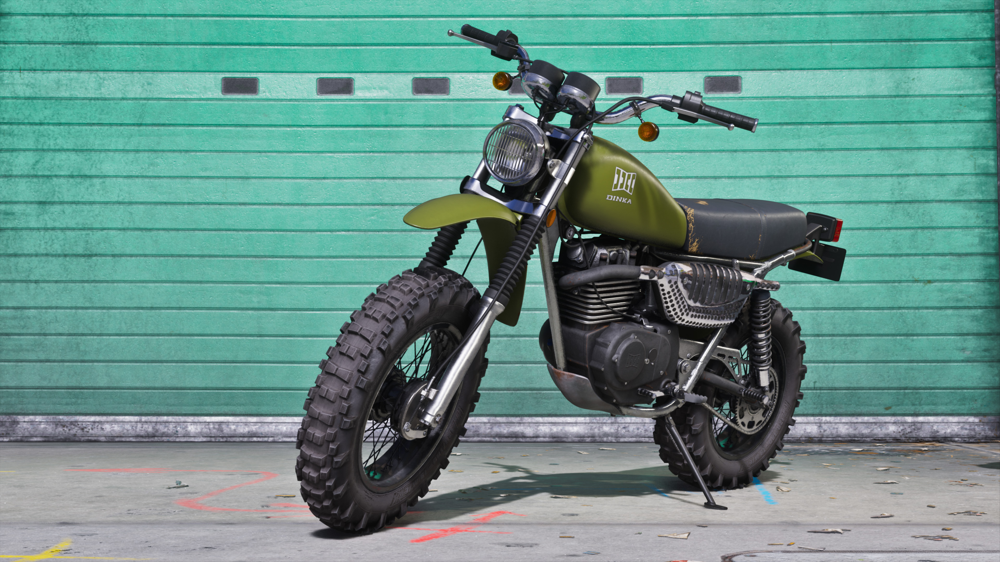

Dinka Enduro Motorcycle
Dinka Enduro Motorcycle é o nome utilizado oficialmente pela Rockstar Games em uma das imagens publicadas na biblioteca de mídia de Grand Theft Auto VI. Por enquanto, esta é uma das fichas com menos informações disponíveis, então o GTA6Zoone mantém somente aquilo que pode ser confirmado.

O que sabemos até agora
A biblioteca oficial de screenshots de Grand Theft Auto VI possui uma imagem identificada como Dinka Enduro Motorcycle.
A imagem aparece dentro da coleção de mídia intitulada Ultimate Edition Benefits.
Entretanto, a Dinka Enduro Motorcycle não aparece individualmente na lista de benefícios do Ultimate Edition Upgrade publicada atualmente pela página de suporte da Rockstar.
Por isso, o GTA6Zoone não classifica atualmente esta motocicleta como um bônus individual do Ultimate Edition Upgrade. Caso a Rockstar esclareça posteriormente sua disponibilidade, esta ficha será atualizada.
Ainda não confirmado: preço, localização, velocidade, aceleração, quantidade de opções de pintura, peças, modificações, método de aquisição e demais características da Dinka Enduro Motorcycle em GTA VI.
Imagem oficial da Dinka Enduro
Até o momento, temos uma imagem oficialmente identificada com o nome da motocicleta. Não repetimos a mesma imagem várias vezes apenas para preencher uma galeria.
Futuras versões da Dinka Enduro
Ainda não existe material suficiente para montar uma galeria de cores ou afirmar quais variações da motocicleta estarão disponíveis ao jogador.
Depois do lançamento, esta área poderá receber screenshots próprios do GTA6Zoone mostrando diferenças verificadas diretamente no jogo.
O que poderá ser modificado?
Ainda não temos confirmação de quais elementos da Dinka Enduro poderão ser personalizados. Esta estrutura fica pronta para receber apenas opções comprovadas no jogo.
Pintura
Cores e acabamentos disponíveis serão catalogados posteriormente.
Componentes
Peças visuais ou funcionais só entrarão após confirmação.
Desempenho
Possíveis melhorias de desempenho ainda não foram detalhadas.
Gameplay da Dinka Enduro
Esta área receberá sua gameplay própria da Dinka Enduro Motorcycle após o lançamento de GTA VI.
Podemos usar o vídeo para mostrar condução em diferentes tipos de terreno, som, câmera, danos, desempenho e opções reais de personalização.
Informações que ainda serão adicionadas
Estes campos permanecerão sem valores até que existam dados oficiais ou verificação direta dentro de GTA VI.
Preço
Valor ou método de desbloqueio.
Localização
Onde encontrar ou adquirir.
Velocidade
Desempenho verificado.
Aceleração
Testes comparativos.
Condução
Comportamento em diferentes terrenos.
Danos
Comportamento após quedas e colisões.
Personalização
Opções reais disponíveis no jogo.
Comparativos
Testes contra outras motocicletas.
O que podemos afirmar hoje
Esse é o título utilizado pela Rockstar na biblioteca oficial de screenshots de GTA VI.
A Rockstar publicou um screenshot identificado especificamente com esse nome.
Essa é a seção da biblioteca oficial em que o screenshot aparece atualmente.
A lista atual do Ultimate Edition Upgrade não menciona Dinka Enduro Motorcycle separadamente.
Rockstar Games
A ficha utiliza somente o que pode ser confirmado atualmente através da biblioteca oficial de GTA VI e da documentação das edições do jogo.